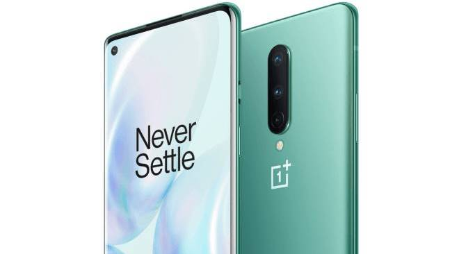

El debut de ASTERION es hoy, junto con el nuevo OnePlus 8 Pro Milan. Nuestra versión 1.0 o mejor conocida como "A-Wing" será desplegada en todo OnePlus; todo es debido gracias a nuestra comunidad..
El OnePlus 8 es parte de la nueva generación de smartphones de OnePlus. Con una pantalla Full HD+ de 6.55 pulgadas, el OnePlus 8 incorpora conectividad 5G en esta serie gracias a un procesador Snapdragon 865 con variantes de 8GB de memoria RAM con 128GB de espacio de almacenamiento o 12GB de RAM con 256GB de almacenamiento, sin posibilidad de expansión. La cámara principal del OnePlus 8 es triple, de 48 MP + 16 MP + 2 MP, mientras que su cámara para selfies es de 16 megapixels. Completando las características del OnePlus 8 encontramos una batería de 4300 mAh de carga rápida, lector de huellas bajo pantalla, parlantes stereo, y Asterion 1.0.
